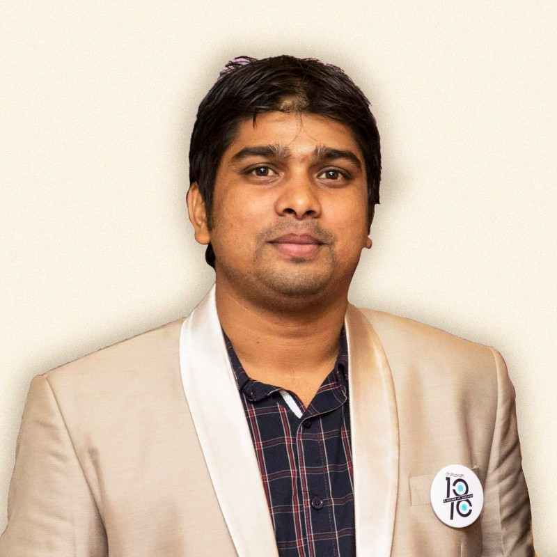

Team Lead & Full-Stack Software Engineer helping teams design, build and evolve enterprise software platforms.
C# · ASP.NET Core · Angular · SQL Server · Microservices · Micro-Frontends · Cloud · Architecture · AI-assisted Engineering
13+ years of software engineering experience across enterprise applications, APIs, distributed systems and modern web platforms. I combine technical leadership, hands-on development, architecture and developer mentoring to deliver maintainable software.

I am a Team Lead and Full-Stack Software Engineer with 13+ years of experience designing and delivering enterprise software platforms. My core engineering background spans C#, ASP.NET Core, Angular, SQL Server and Java.
At DataPath Ltd., I lead the technical direction of the RK.Web platform across RK.Web.Client, RK.Web.Backend and RK.Web.Lib. My responsibilities include architecture, technical design, implementation, code quality, performance, mentoring and cross-team technical collaboration.
On the frontend, I work with Angular standalone components, micro-frontends, Native / Module Federation, reusable component libraries and shared engineering patterns. On the backend, I work with ASP.NET Core, REST APIs, Clean Architecture, CQRS, microservices, authentication, caching and SQL Server.
I also actively practice AI-assisted software engineering, using tools such as Claude and other AI coding assistants for architecture exploration, implementation, refactoring, debugging, documentation and rapid prototyping.
My approach is to use AI to increase engineering leverage while keeping architecture, security, testing, code review and engineering judgment at the center of the development process.
As a Team Lead, I focus on both technical execution and team development — helping engineers solve complex problems while maintaining engineering quality, delivery discipline and architectural consistency.
Areas I am actively exploring and applying as software engineering continues to evolve.
AI coding assistants, AI-native SDLC workflows, architecture exploration and developer productivity.
Microservices, containers, distributed systems, AKS, observability and scalable backend platforms.
Standalone components, micro-frontends, reusable component libraries and scalable frontend architecture.
Mentoring, architecture decisions, technical communication, developer enablement and engineering quality.
Technologies, architecture practices and engineering tools I use to move enterprise software from shared contracts to maintainable production systems.
I focus not only on which technology to use, but also on the engineering problem it solves and the trade-offs behind the decision.
I use AI coding assistants as engineering tools to increase development leverage — while keeping architecture, security, testing and engineering judgment at the center of the process.
Current Team Lead scope at DataPath Ltd., coordinating RK.Web.Client, RK.Web.Backend and RK.Web.Lib for an enterprise retirement-plan platform.
A modular enterprise platform connecting Angular applications, .NET services, shared libraries and core recordkeeping APIs.
Client source code is private. The architecture shown here intentionally contains only high-level technical information.
Build and evolve multiple enterprise applications while maintaining consistency across teams.
Combine micro-frontends, shared libraries and independently deployable backend services.
Coordinate technical decisions, implementation direction, code quality and cross-team dependencies.
A modular engineering platform supporting independent application development with shared technical foundations.
Public repositories demonstrating how I explore architecture, .NET, Angular, microservices and software engineering practices.
An e-commerce reference system split into independently deployable .NET microservices.
A .NET 8 template exploring Clean Architecture, SOLID principles and CQRS-oriented application design.
Angular standalone components with Module Federation, demonstrating a shell and remote application architecture.
CRUD Web API demonstrating Dapper-based data access with SQL Server.
C# Windows Service project covering service lifecycle, installer components and database operations.
Structured logging implementation using Serilog in a .NET 8 application.
C# implementation for reading an Office 365 mailbox.
13+ years of engineering experience, progressing from Java and full-stack development into technical leadership.
Lead Software Engineer (Jul 2024 – Present) · Senior Software Engineer (Jul 2021 – Jun 2024) · Software Engineer (Feb 2018 – Jun 2021)
Current scope: RK.Web.Client · RK.Web.Backend · RK.Web.Lib
Software Engineer
Java Software Engineer
B.Sc. (Engg.), Information and Communication Technology
GPA: 3.13 / 4.00
Open to conversations about Team Lead, Senior Engineering, Software Architecture and full-stack engineering opportunities.